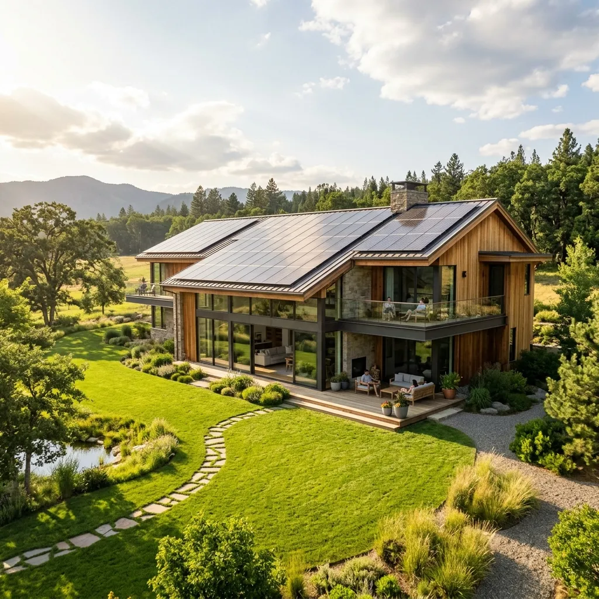
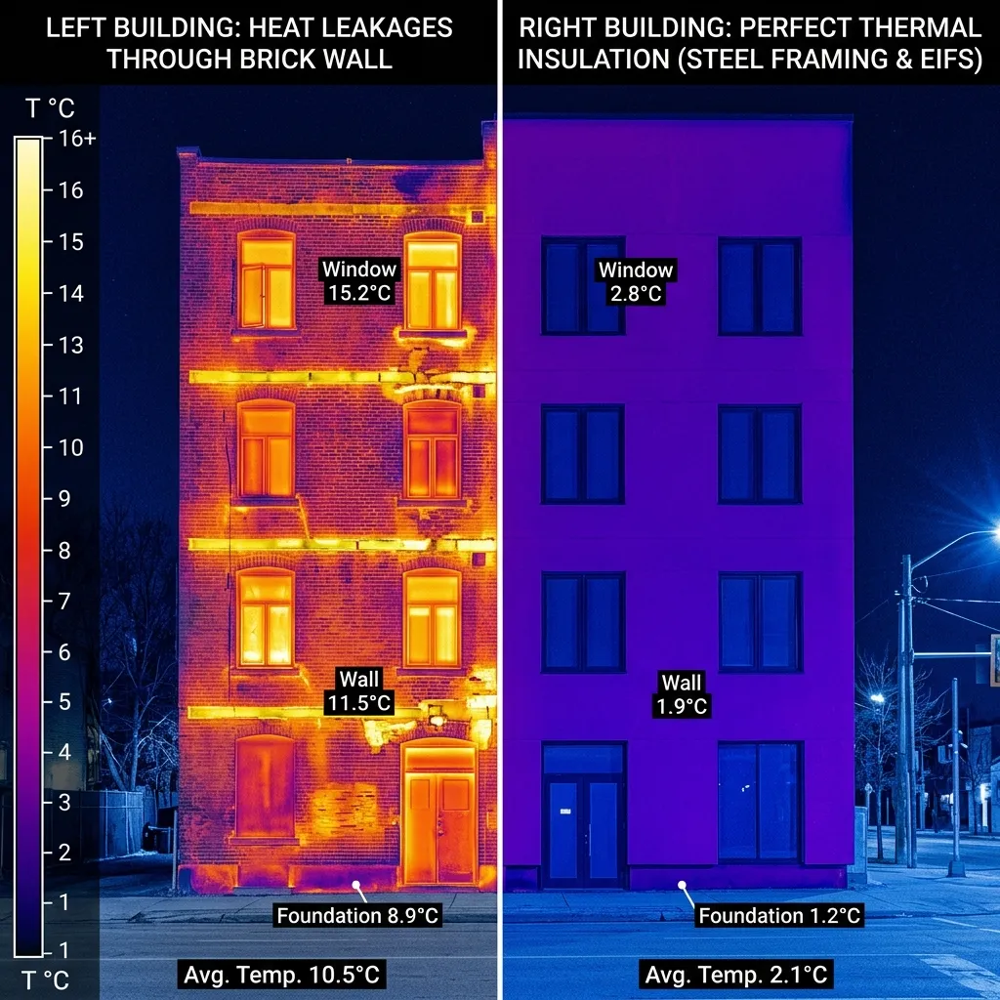
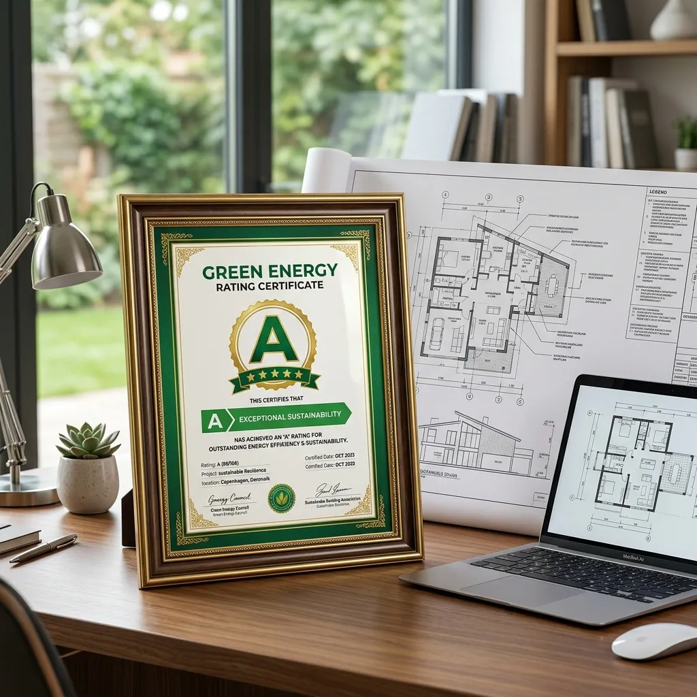

Ahorro Energético
con Steel Framing
El ahorro energético con steel framing no es un beneficio secundario, es una de sus mayores virtudes de ingeniería. Al combinar aislantes termoacústicos continuos en el núcleo del muro y revestimientos tipo EIFS en el exterior, las viviendas en seco reducen hasta un 60% la pérdida de calor o frío, minimizando el uso de aire acondicionado y calefacción en Tucumán.

energy_savings_leaf Reducción de Huella de Carbono
Aislamiento de alto desempeño que califica como construcción verde.
Simulá tu Ahorro Energético Real
Desplazá la barra para indicar la superficie cubierta de tu futura vivienda y calculá el ahorro estimado anual en climatización.
Costo Estimado en Climatización Anual

Transmitancia Térmica: Coeficiente K
En ingeniería térmica, la transmitancia (representada por el valor K) indica la cantidad de calor que se escapa a través de una pared. A menor valor K, mejor aislación de la vivienda.
Muro de Ladrillos Tradicional (18 cm)
Coeficiente K = 1.85 W/m²K (Poco eficiente, requiere constante climatización)
Muro de Steel Framing con EIFS (15 cm)
Coeficiente K = 0.35 W/m²K (Calificación de Eficiencia Clase A)
Preguntas sobre Climatización y Ahorro
¿Cómo se evita el puente térmico en el acero estructural?
El puente térmico ocurre cuando el calor viaja a través del acero hacia el exterior. En Constructora ByB lo evitamos completamente aplicando el sistema exterior EIFS (External Insulation Finish System), recubriendo toda la estructura exterior con planchas continuas de EPS de alta densidad antes de colocar el acabado final.
¿Qué ahorro de consumo representa en el verano tucumano?
Tucumán registra veranos de más de 40 °C. En una casa tradicional, las paredes de ladrillo absorben calor todo el día e irradian calor hacia el interior por la noche. Las casas de Steel Framing impiden el ingreso de la radiación gracias a sus barreras térmicas, logrando que los aires acondicionados alcancen la temperatura deseada rápido y consuman hasta un 60% menos electricidad.

Invertí en confort y ahorro permanente
Una casa eficiente de Steel Framing se paga sola a lo largo de los años mediante la reducción drástica de tus facturas de gas y luz. Construí el futuro hoy con Constructora ByB.